import geopandas as gpd
import pandas as pd
from shapely.geometry import Point
import matplotlib.pyplot as plt
from matplotlib.colors import ListedColormap
import requests
from bs4 import BeautifulSoup
from textblob import TextBlob
import spacy
import altair as alt
from collections import Counter
import statsmodels.api as sm
import statsmodels.api as smRelationship Between Socioeconomic Indicators and Health outcomes in Chicago
1. Motivation and Research Question
2. Data Resource
3. Text Analysis
url: https://www.cbsnews.com/chicago/news/cancer-care-disparities-1/ Subject: Chicago’s South, West Sides have many more cancer patients, less access to care. ### Scrape the article content
# URL
url = 'https://www.cbsnews.com/chicago/news/cancer-care-disparities-1/'
# Load the web page
response = requests.get(url)
response.raise_for_status() # Check if the request is successful
# HTML parsing
soup = BeautifulSoup(response.text, 'html.parser')
# 기사 본문 추출 (예: <div> 태그의 클래스명이 'content'인 경우)
article_section = soup.find('section', class_='content__body')
if article_section:
paragraphs = article_section.find_all('p')
article_text = '\n'.join([para.get_text() for para in paragraphs])
print(article_text)
else:
print("Article is not found.")CHICAGO (CBS) – Chicago has long been a hub for breakthroughs in medicine, but the number of people dying from cancer in the city shows not everyone benefits equally.
For those in Chicago's low-income, predominately Black or Latino neighborhoods, they don't have the same access to or quality of care. CBS 2's Audrina Sinclair examined the problem and who's helping.
From Genella Jones-Riggins' backyard in Roseland, she grows it and cans it.
"[There are] eight or nine different types of tomatoes," she said.
She has stacks and stacks of jars of "shelf-ready food" for at least six months to a year, she said. It's piles of produce.
"It's wholesome food that I grew myself," Jones-Riggins said. "It's my responsibility to make sure that I stay healthy."
Speaking of health…
Sinclair: "Where are you at now in your journey?"
Jones-Riggins: "My prognosis is well. My last scans were clean."
The good news came a year after finding a lump in her breast and having no health insurance.
"You hear all the time about breast cancer, free screenings, but when I needed it, I couldn't find it," Jones-Riggins said. "I called around for two weeks, and I could not find anything."
A friend told her about the nonprofit Equal Hope.
"They made sure that I got everything that I needed," she said.
That started with a mammogram and biopsy at Rush University Medical Center, where doctors diagnosed her with triple negative breast cancer.
Sinclair: "Someone went to every appointment with you. How many appointments are we talking about?"
Jones-Riggins: "I had 17 rounds of chemo. MRIs, and you have CT scans, and you have bone scans, and you have bone density scans. Then after chemo, you have radiation and radiation is every single day for four to five weeks."
Her nurse navigator, Rita, was there for her, and the costs were all covered.
"This is a state-funded program that allows women to access care at no cost," said Paris Thomas, of Equal Hope. "Which is why she didn't have to see those bills."
Thomas works to fight Chicago's cancer care disparities with Equal Hope, which helps 1,800 women like Jones-Riggins with breast or cervical cancer.
"We serve the communities on the West and South Side of Chicago," Thomas said. "Primarily those that are Black and brown, and usually those who are considered under-resourced, disinvested in."
A map from the Chicago Department of Public Health and PHAME Center at the University of Illinois at Chicago shows the neighborhoods where the most people are dying from cancer in Chicago. The darker the blue, the more cancer deaths.
All but one of the communities are on the South and West Sides.
"We know that we have to intervene in this community because there's a problem here," Thomas said.
Equal Hope is intervening for patients treated at safety net hospitals in their neighborhoods. Such hospitals are usually under-resourced facilities with outdated equipment, lower staffing levels, and limited hours.
"Let's say capacity," said Thomas. "Maybe they don't have a full-time mammogram tech, and they're only able to see women once a week. So we know that we now have to pivot and try to move our populations to other facilities."
A study by the Health Care Council of Chicago looked at those barriers to care in the city's under-resourced neighborhoods and found specialists on the South Side are treating three times as many patients as on the North Side. That's about 1,000 patients for every doctor on the South Side of the city, compared to about 350 patients for every doctor in many North Side communities.
Thomas is hyper-focused on the disparities to help people like Jones-Riggins get the cancer care they need.
"I don't know where I'd be without the help that they provided me," said a tearful Jones-Riggins.
To learn more about Equal Hope and its services, visit EqualHope.org.
In the second part of her story, Sinclair will dig deeper into the disparities and ways to tackle them, including a look at a new cancer center coming to Hyde Park.
Audrina Sinclair is an anchor on the CBS2 Morning News.Text Analysis - semtimental
# Create textblob
blob = TextBlob(article_text)
# Sentiment Analysis
sentiment = blob.sentiment
polarity = sentiment.polarity # -1(negative) +1(oisitive)
subjectivity = sentiment.subjectivity # 0(objective) 1(subjective)
print(f"Polarity: {polarity}") # 0.10 (slightly positive)
print(f"Subjectivity: {subjectivity}") # 0.38 (relatively objective)Polarity: 0.10115199615199617
Subjectivity: 0.38106220939554264Text Analysis - semtimental by sentence
nlp = spacy.load("en_core_web_sm")
doc = nlp(article_text)
type(doc)
sents = list(doc.sents)
sents_list = list(doc.sents)
sents_list
for token in sents_list[1]:
print(token.text)For
those
in
Chicago
's
low
-
income
,
predominately
Black
or
Latino
neighborhoods
,
they
do
n't
have
the
same
access
to
or
quality
of
care
.# Calculate setence polarity
sentence_polarities = []
for i, sentence in enumerate(sents_list):
blob = TextBlob(sentence.text)
polarity = blob.sentiment.polarity
sentence_polarities.append({"n": i + 1, "sentence": sentence.text, "polarity": polarity})
# Create a DataFrame
df_polarity = pd.DataFrame(sentence_polarities)
# Print the outcome
print(df_polarity) n sentence polarity
0 1 CHICAGO (CBS) – Chicago has long been a hub fo... -0.025000
1 2 For those in Chicago's low-income, predominate... -0.083333
2 3 CBS 2's Audrina Sinclair examined the problem ... 0.000000
3 4 From Genella Jones-Riggins' backyard in Rosela... 0.000000
4 5 "[There are] eight or nine different types of ... 0.000000
5 6 She has stacks and stacks of jars of "shelf-re... -0.300000
6 7 It's piles of produce.\n 0.000000
7 8 "It's wholesome food that I grew myself," Jone... 0.000000
8 9 "It's my responsibility to make sure that I st... 0.500000
9 10 Speaking of health…\nSinclair: "Where are you ... 0.000000
10 11 My last scans were clean. 0.183333
11 12 "\nThe good news came a year after finding a l... 0.700000
12 13 "You hear all the time about breast cancer, fr... 0.400000
13 14 "I called around for two weeks, and I could no... 0.000000
14 15 A friend told her about the nonprofit Equal Ho... 0.000000
15 16 "They made sure that I got everything that I n... 0.500000
16 17 That started with a mammogram and biopsy at Ru... -0.133333
17 18 Sinclair: "Someone went to every appointment w... 0.000000
18 19 How many appointments are we talking about?"\n... 0.500000
19 20 MRIs, and you have CT scans, and you have bone... 0.000000
20 21 Then after chemo, you have radiation and radia... -0.071429
21 22 Her nurse navigator, Rita, was there for her, ... 0.000000
22 23 "This is a state-funded program that allows wo... 0.000000
23 24 "Which is why she didn't have to see those bills. 0.000000
24 25 "\nThomas works to fight Chicago's cancer care... 0.000000
25 26 "We serve the communities on the West and Sout... 0.000000
26 27 "Primarily those that are Black and brown, and... -0.005556
27 28 "\nA map from the Chicago Department of Public... 0.133333
28 29 The darker the blue, the more cancer deaths.\n 0.250000
29 30 All but one of the communities are on the Sout... 0.000000
30 31 "We know that we have to intervene in this com... 0.000000
31 32 Equal Hope is intervening for patients treated... 0.000000
32 33 Such hospitals are usually under-resourced fac... -0.180357
33 34 "Let's say capacity," said Thomas. 0.000000
34 35 "Maybe they don't have a full-time mammogram t... 0.250000
35 36 So we know that we now have to pivot and try t... -0.125000
36 37 "\nA study by the Health Care Council of Chica... 0.500000
37 38 That's about 1,000 patients for every doctor o... 0.500000
38 39 Thomas is hyper-focused on the disparities to ... 0.000000
39 40 "I don't know where I'd be without the help th... 0.000000
40 41 To learn more about Equal Hope and its service... 0.250000
41 42 In the second part of her story, Sinclair will... 0.012121
42 43 Audrina Sinclair is an anchor on the CBS2 Morn... 0.000000# Create a graph about polarity by sentence
chart_polarity = alt.Chart(df_polarity).mark_line().encode(
x=alt.X('n:Q', title='Sentence Number'),
y=alt.Y('polarity:Q', title='Polarity'),
tooltip=['sentence', 'polarity']
).properties(
title='Sentence Polarity of Article',
width=800,
height=400
).interactive()
chart_polarityText Analysis - semtimental by vocabulary
# Load spaCy model
nlp = spacy.load("en_core_web_sm")
# Define custom stopwords
custom_stopwords = {"said", "jones", "riggins", "thomas", "sinclair"}
# Add custom stopwords to the basic stopwords in spaCy
all_stopwords = nlp.Defaults.stop_words.union(custom_stopwords)
# Remove stopwords and extract words
words = [
token.text.lower()
for sentence in sents_list
for token in sentence
if token.is_alpha and token.text.lower() not in all_stopwords
]
# Calculate words frequency
word_freq = Counter(words)
# Extract top 10 words
most_common_words = word_freq.most_common(10)
df_word_freq = pd.DataFrame(most_common_words, columns=["word", "frequency"])
# Print the outcome
print(df_word_freq) word frequency
0 chicago 9
1 cancer 9
2 care 6
3 equal 5
4 hope 5
5 neighborhoods 4
6 health 4
7 scans 4
8 breast 4
9 south 4# Create a bar graph
chart_word_frequency = alt.Chart(df_word_freq).mark_bar().encode(
x=alt.X("frequency:Q", title="Frequency"),
y=alt.Y("word:N", sort="-x", title="Word"),
tooltip=["word", "frequency"]
).properties(
title="Top 10 Most Frequent Words (Excluding All Stopwords)",
width=600,
height=400
)
chart_word_frequency

4. Basic descriptive statistics
# Load the dataset.
file_path = "Public_Health_Statistics_-_Selected_public_health_indicators_by_Chicago_community_area_-_Historical_20241031.csv"
data = pd.read_csv(file_path)
data.head()| Community Area | Community Area Name | Birth Rate | General Fertility Rate | Low Birth Weight | Prenatal Care Beginning in First Trimester | Preterm Births | Teen Birth Rate | Assault (Homicide) | Breast cancer in females | ... | Childhood Lead Poisoning | Gonorrhea in Females | Gonorrhea in Males | Tuberculosis | Below Poverty Level | Crowded Housing | Dependency | No High School Diploma | Per Capita Income | Unemployment | |
|---|---|---|---|---|---|---|---|---|---|---|---|---|---|---|---|---|---|---|---|---|---|
| 0 | 1 | Rogers Park | 16.4 | 62.0 | 11.0 | 73.0 | 11.2 | 40.8 | 7.7 | 23.3 | ... | 0.5 | 322.5 | 423.3 | 11.4 | 22.7 | 7.9 | 28.8 | 18.1 | 23714 | 7.5 |
| 1 | 2 | West Ridge | 17.3 | 83.3 | 8.1 | 71.1 | 8.3 | 29.9 | 5.8 | 20.2 | ... | 1.0 | 141.0 | 205.7 | 8.9 | 15.1 | 7.0 | 38.3 | 19.6 | 21375 | 7.9 |
| 2 | 3 | Uptown | 13.1 | 50.5 | 8.3 | 77.7 | 10.3 | 35.1 | 5.4 | 21.3 | ... | 0.5 | 170.8 | 468.7 | 13.6 | 22.7 | 4.6 | 22.2 | 13.6 | 32355 | 7.7 |
| 3 | 4 | Lincoln Square | 17.1 | 61.0 | 8.1 | 80.5 | 9.7 | 38.4 | 5.0 | 21.7 | ... | 0.4 | 98.8 | 195.5 | 8.5 | 9.5 | 3.1 | 25.6 | 12.5 | 35503 | 6.8 |
| 4 | 5 | North Center | 22.4 | 76.2 | 9.1 | 80.4 | 9.8 | 8.4 | 1.0 | 16.6 | ... | 0.9 | 85.4 | 188.6 | 1.9 | 7.1 | 0.2 | 25.5 | 5.4 | 51615 | 4.5 |
5 rows × 29 columns
# Replace parentheses with empty strings, hyphens with underscores, and spaces with underscores in column names
data.columns = data.columns.str.replace(r"[()]", "", regex=True).str.replace("-", "_").str.replace(" ", "_").str.lower()# 3. Remove unncessary columns
columns_to_drop = [
"childhood_blood_lead_level_screening",
"childhood_lead_poisoning",
"gonorrhea_in_females"]
data = data.drop(columns=columns_to_drop)# 3-1. Create a table of cancer_all_sites (descending) by community area
import pandas as pd
import altair as alt
# Select necessary columns from dataframe
cancer_table = data[["community_area", "community_area_name", "cancer_all_sites"]].copy()
# Drop na and arrange by descending
cancer_table = cancer_table.dropna(subset=["cancer_all_sites"])
cancer_table = cancer_table.sort_values(by="cancer_all_sites", ascending=False)
# Initiate index
cancer_table.reset_index(drop=True, inplace=True)
# 3-2. Create a table of diabetes_related (descending) by community area
# Select necessary columns from dataframe
diabetes_table = data[["community_area", "community_area_name", "diabetes_related"]].copy()
# Drop na and arrange by descending
diabetes_table = diabetes_table.dropna(subset=["diabetes_related"])
diabetes_table = diabetes_table.sort_values(by="diabetes_related", ascending=False)
# Initiate index
diabetes_table.reset_index(drop=True, inplace=True)
# 3-4. Create a table of below_poverty_level (descending) by community area
# Select necessary columns from dataframe
poverty_table = data[["community_area", "community_area_name", "below_poverty_level"]].copy()
# Drop na and arrange by descending
poverty_table = poverty_table.dropna(subset=["below_poverty_level"])
poverty_table = poverty_table.sort_values(by="below_poverty_level", ascending=False)
# Initiate index
poverty_table.reset_index(drop=True, inplace=True)
# 3-5. Create a table of no_high_school_diploma (descending) by community area
# Select necessary columns from dataframe
education_table = data[["community_area", "community_area_name", "no_high_school_diploma"]].copy()
# Drop na and arrange by descending
education_table = education_table.dropna(subset=["no_high_school_diploma"])
education_table = education_table.sort_values(by="no_high_school_diploma", ascending=False)
# Initiate index
education_table.reset_index(drop=True, inplace=True)
# 3-6. Create a table of per_capita_income (descending) by community area
# Select necessary columns from dataframe
income_table = data[["community_area", "community_area_name", "per_capita_income"]].copy()
# Drop na and arrange by descending
income_table = income_table.dropna(subset=["per_capita_income"])
income_table = income_table.sort_values(by="per_capita_income", ascending=False)
# Initiate index
income_table.reset_index(drop=True, inplace=True)
# 3-7. Create a table of unemployment (descending) by community area
# Select necessary columns from dataframe
unemployment_table = data[["community_area", "community_area_name", "unemployment"]].copy()
# Drop na and arrange by descending
unemployment_table = unemployment_table.dropna(subset=["unemployment"])
unemployment_table = unemployment_table.sort_values(by="unemployment", ascending=False)
# Initiate index
unemployment_table.reset_index(drop=True, inplace=True)# 3-8. Create a table of cancer_all_sites (descending) by community area
# Extractn top 10 community areas
top_10_cancer_areas = cancer_table.head(10)
# Create a bar chart
bar_chart_cancer = alt.Chart(top_10_cancer_areas).mark_bar().encode(
x=alt.X("cancer_all_sites:Q", title="Cancer (All Sites)"),
y=alt.Y("community_area_name:N", sort="-x", title="Community Area"),
tooltip=["community_area_name", "cancer_all_sites"]
).properties(
title="Top 10 Community Areas with Highest Cancer Index",
width=600,
height=400
)
bar_chart_cancer.show()
# 3-9. Create a table of diabetes_related (descending) by community area
# Extractn top 10 community areas
top_10_diabetes_areas = diabetes_table.head(10)
# Create a bar chart
bar_chart_diabetes = alt.Chart(top_10_diabetes_areas).mark_bar().encode(
x=alt.X("diabetes_related:Q", title="Cancer (All Sites)"),
y=alt.Y("community_area_name:N", sort="-x", title="Community Area"),
tooltip=["community_area_name", "diabetes_related"]
).properties(
title="Top 10 Community Areas with Highest Diabetes Index",
width=600,
height=400
)
bar_chart_diabetes.show()
# 3-11. Create a table of below_poverty_level (descending) by community area
# Extractn top 10 community areas
top_10_poverty_areas = poverty_table.head(10)
# Create a bar chart
bar_chart_poverty = alt.Chart(top_10_poverty_areas).mark_bar().encode(
x=alt.X("below_poverty_level:Q", title="Cancer (All Sites)"),
y=alt.Y("community_area_name:N", sort="-x", title="Community Area"),
tooltip=["community_area_name", "below_poverty_level"]
).properties(
title="Top 10 Community Areas with Highest Poverty Index",
width=600,
height=400
)
bar_chart_poverty.show()
# 3-12. Create a table of no_high_school_diploma (descending) by community area
# Extractn top 10 community areas
top_10_education_areas = education_table.head(10)
# Create a bar chart
bar_chart_education = alt.Chart(top_10_education_areas).mark_bar().encode(
x=alt.X("no_high_school_diploma:Q", title="Cancer (All Sites)"),
y=alt.Y("community_area_name:N", sort="-x", title="Community Area"),
tooltip=["community_area_name", "no_high_school_diploma"]
).properties(
title="Top 10 Community Areas with Highest No Education Index",
width=600,
height=400
)
bar_chart_education.show()
# 3-13. Create a table of per_capita_income (descending) by community area
# Extractn top 10 community areas
top_10_income_areas = income_table.head(10)
# Create a bar chart
bar_chart_income = alt.Chart(top_10_income_areas).mark_bar().encode(
x=alt.X("per_capita_income:Q", title="Cancer (All Sites)"),
y=alt.Y("community_area_name:N", sort="-x", title="Community Area"),
tooltip=["community_area_name", "per_capita_income"]
).properties(
title="Top 10 Community Areas with Highest Income (per capita) Index",
width=600,
height=400
)
bar_chart_income.show()
# 3-14. Create a table of unemployment (descending) by community area
# Extractn top 10 community areas
top_10_unemployment_areas = unemployment_table.head(10)
# Create a bar chart
bar_chart_unemployment = alt.Chart(top_10_unemployment_areas).mark_bar().encode(
x=alt.X("unemployment:Q", title="Cancer (All Sites)"),
y=alt.Y("community_area_name:N", sort="-x", title="Community Area"),
tooltip=["community_area_name", "unemployment"]
).properties(
title="Top 10 Community Areas with Highest Unemployment Index",
width=600,
height=400
)
bar_chart_unemployment.show()


Choropleth map
# reading chicago community shape file
chi_shp = gpd.read_file("chicomm/chicomm.shp")
chi_shp = chi_shp.to_crs(epsg=32616)
# spatial join demographic data
chi_dem = pd.read_csv("Public_Health_Statistics_-_Selected_public_health_indicators_by_Chicago_community_area_-_Historical_20241125.csv")
# fix the wrong community name
chi_dem["Community Area Name"] = chi_dem["Community Area Name"].replace(
{"Montclaire": "Montclare"}
)
# Merge shp with the demographic dataset
chi_shp_dem = chi_shp.merge(chi_dem, left_on="DISTITLE",right_on = "Community Area Name", how="outer")
chi_shp_dem = chi_shp_dem.to_crs(epsg=32616)
# save the shape + demographic dataset for shiny
chi_shp_dem.to_file("chi_shp_dem.geojson", driver="GeoJSON")Look at the color map in income, education, poverty rate, and health outcome
columns = ['Cancer (All Sites)','Diabetes-related', 'Below Poverty Level','No High School Diploma', 'Per Capita Income', 'Unemployment']
for col in columns:
fig, ax = plt.subplots(1, 1, figsize=(5, 5))
chi_shp_dem.plot(
column=col,
legend=True,
ax=ax,
cmap="Blues"
)
ax.set_title(col) # Set the title for the plot
plt.show()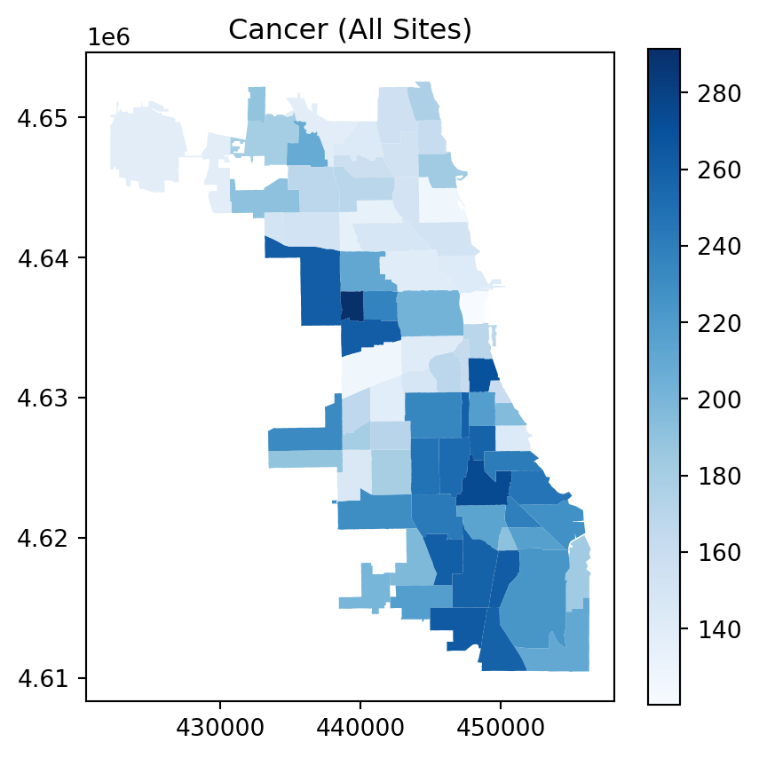
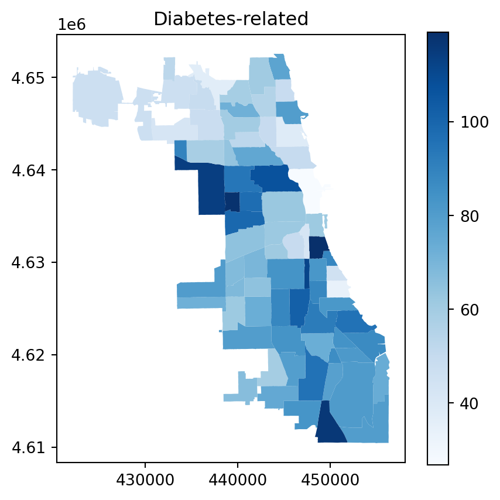
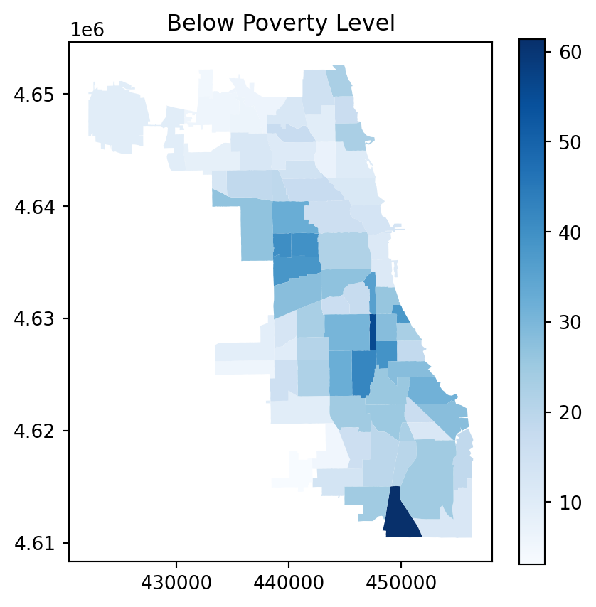
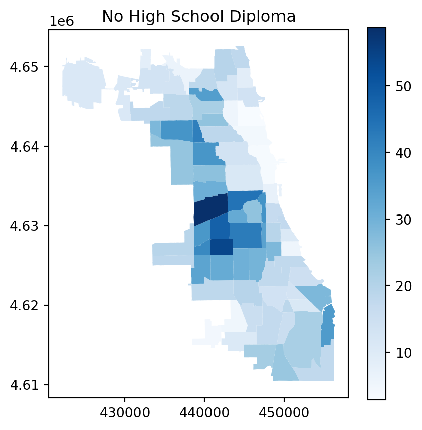
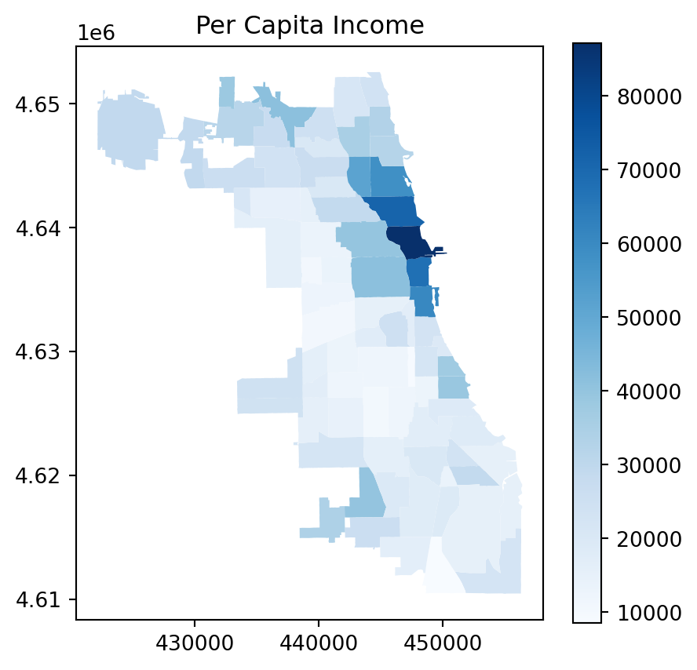
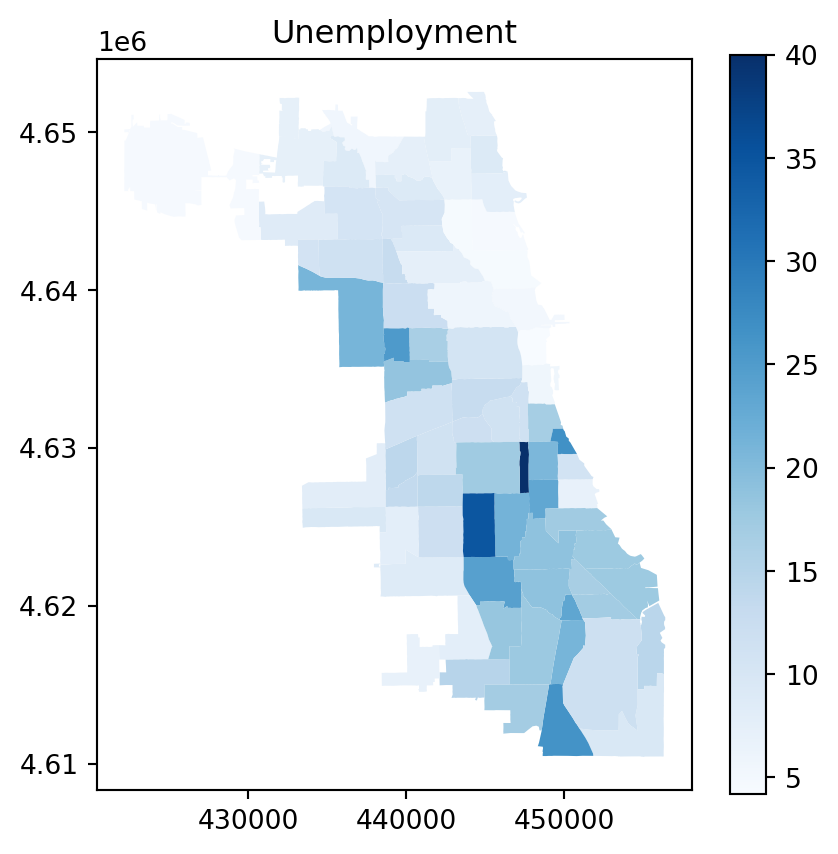
5. Linear Regression
Independent Variable (X) : below_poverty_level, no_high_school_diploma, per_capita_income, unemployment
Dependent Variable (Y) : cancer_all_sites, diabetes_related,breast_cancer_in_females,colorectal_cancer, infant_mortality_rate, lung_cancer, prostate_cancer_in_males, stroke_cerebrovascular_disease,
# 1-1. below_poverty_level ~ cancer_all_sites
x = sm.add_constant(data["below_poverty_level"])
y = data["cancer_all_sites"]
model_1 = sm.OLS(y, x).fit()
print(model_1.summary())
# 1-2. no_high_school_diploma ~ cancer_all_sites
x = sm.add_constant(data["no_high_school_diploma"])
y = data["cancer_all_sites"]
model_2 = sm.OLS(y, x).fit()
print(model_2.summary())
# 1-3. per_capita_income ~ cancer_all_sites
x = sm.add_constant(data["per_capita_income"])
y = data["cancer_all_sites"]
model_3 = sm.OLS(y, x).fit()
print(model_3.summary())
# 1-4. unemployment ~ cancer_all_sites
x = sm.add_constant(data["unemployment"])
y = data["cancer_all_sites"]
model_4 = sm.OLS(y, x).fit()
print(model_4.summary())
# 2-1. below_poverty_level ~ diabetes_related
x = sm.add_constant(data["below_poverty_level"])
y = data["diabetes_related"]
model_5 = sm.OLS(y, x).fit()
print(model_5.summary())
# 2-2. no_high_school_diploma ~ diabetes_related
x = sm.add_constant(data["no_high_school_diploma"])
y = data["diabetes_related"]
model_6 = sm.OLS(y, x).fit()
print(model_6.summary())
# 2-3. per_capita_income ~ diabetes_related
x = sm.add_constant(data["per_capita_income"])
y = data["diabetes_related"]
model_7 = sm.OLS(y, x).fit()
print(model_7.summary())
# 2-4. unemployment ~ diabetes_related
x = sm.add_constant(data["unemployment"])
y = data["diabetes_related"]
model_8 = sm.OLS(y, x).fit()
print(model_8.summary()) OLS Regression Results
==============================================================================
Dep. Variable: cancer_all_sites R-squared: 0.255
Model: OLS Adj. R-squared: 0.246
Method: Least Squares F-statistic: 25.73
Date: Fri, 06 Dec 2024 Prob (F-statistic): 2.75e-06
Time: 18:56:50 Log-Likelihood: -391.62
No. Observations: 77 AIC: 787.2
Df Residuals: 75 BIC: 791.9
Df Model: 1
Covariance Type: nonrobust
=======================================================================================
coef std err t P>|t| [0.025 0.975]
---------------------------------------------------------------------------------------
const 153.5515 9.213 16.668 0.000 135.199 171.904
below_poverty_level 2.0070 0.396 5.073 0.000 1.219 2.795
==============================================================================
Omnibus: 7.011 Durbin-Watson: 1.337
Prob(Omnibus): 0.030 Jarque-Bera (JB): 2.777
Skew: 0.075 Prob(JB): 0.249
Kurtosis: 2.082 Cond. No. 47.5
==============================================================================
Notes:
[1] Standard Errors assume that the covariance matrix of the errors is correctly specified.
OLS Regression Results
==============================================================================
Dep. Variable: cancer_all_sites R-squared: 0.000
Model: OLS Adj. R-squared: -0.013
Method: Least Squares F-statistic: 0.01107
Date: Fri, 06 Dec 2024 Prob (F-statistic): 0.916
Time: 18:56:50 Log-Likelihood: -402.97
No. Observations: 77 AIC: 809.9
Df Residuals: 75 BIC: 814.6
Df Model: 1
Covariance Type: nonrobust
==========================================================================================
coef std err t P>|t| [0.025 0.975]
------------------------------------------------------------------------------------------
const 195.2472 10.598 18.423 0.000 174.135 216.359
no_high_school_diploma -0.0449 0.427 -0.105 0.916 -0.895 0.805
==============================================================================
Omnibus: 21.703 Durbin-Watson: 1.195
Prob(Omnibus): 0.000 Jarque-Bera (JB): 5.435
Skew: 0.277 Prob(JB): 0.0660
Kurtosis: 1.823 Cond. No. 50.3
==============================================================================
Notes:
[1] Standard Errors assume that the covariance matrix of the errors is correctly specified.
OLS Regression Results
==============================================================================
Dep. Variable: cancer_all_sites R-squared: 0.195
Model: OLS Adj. R-squared: 0.184
Method: Least Squares F-statistic: 18.13
Date: Fri, 06 Dec 2024 Prob (F-statistic): 5.90e-05
Time: 18:56:50 Log-Likelihood: -394.64
No. Observations: 77 AIC: 793.3
Df Residuals: 75 BIC: 798.0
Df Model: 1
Covariance Type: nonrobust
=====================================================================================
coef std err t P>|t| [0.025 0.975]
-------------------------------------------------------------------------------------
const 228.1009 9.229 24.715 0.000 209.715 246.486
per_capita_income -0.0013 0.000 -4.258 0.000 -0.002 -0.001
==============================================================================
Omnibus: 12.279 Durbin-Watson: 1.217
Prob(Omnibus): 0.002 Jarque-Bera (JB): 3.672
Skew: -0.098 Prob(JB): 0.159
Kurtosis: 1.948 Cond. No. 5.73e+04
==============================================================================
Notes:
[1] Standard Errors assume that the covariance matrix of the errors is correctly specified.
[2] The condition number is large, 5.73e+04. This might indicate that there are
strong multicollinearity or other numerical problems.
OLS Regression Results
==============================================================================
Dep. Variable: cancer_all_sites R-squared: 0.479
Model: OLS Adj. R-squared: 0.472
Method: Least Squares F-statistic: 68.95
Date: Fri, 06 Dec 2024 Prob (F-statistic): 3.15e-12
Time: 18:56:50 Log-Likelihood: -377.87
No. Observations: 77 AIC: 759.7
Df Residuals: 75 BIC: 764.4
Df Model: 1
Covariance Type: nonrobust
================================================================================
coef std err t P>|t| [0.025 0.975]
--------------------------------------------------------------------------------
const 134.5013 8.131 16.542 0.000 118.304 150.699
unemployment 4.4932 0.541 8.304 0.000 3.415 5.571
==============================================================================
Omnibus: 1.059 Durbin-Watson: 1.509
Prob(Omnibus): 0.589 Jarque-Bera (JB): 1.120
Skew: -0.202 Prob(JB): 0.571
Kurtosis: 2.568 Cond. No. 32.4
==============================================================================
Notes:
[1] Standard Errors assume that the covariance matrix of the errors is correctly specified.
OLS Regression Results
==============================================================================
Dep. Variable: diabetes_related R-squared: 0.415
Model: OLS Adj. R-squared: 0.407
Method: Least Squares F-statistic: 53.24
Date: Fri, 06 Dec 2024 Prob (F-statistic): 2.57e-10
Time: 18:56:50 Log-Likelihood: -324.34
No. Observations: 77 AIC: 652.7
Df Residuals: 75 BIC: 657.4
Df Model: 1
Covariance Type: nonrobust
=======================================================================================
coef std err t P>|t| [0.025 0.975]
---------------------------------------------------------------------------------------
const 47.4889 3.845 12.351 0.000 39.829 55.149
below_poverty_level 1.2048 0.165 7.297 0.000 0.876 1.534
==============================================================================
Omnibus: 2.674 Durbin-Watson: 1.589
Prob(Omnibus): 0.263 Jarque-Bera (JB): 2.164
Skew: -0.158 Prob(JB): 0.339
Kurtosis: 3.758 Cond. No. 47.5
==============================================================================
Notes:
[1] Standard Errors assume that the covariance matrix of the errors is correctly specified.
OLS Regression Results
==============================================================================
Dep. Variable: diabetes_related R-squared: 0.076
Model: OLS Adj. R-squared: 0.063
Method: Least Squares F-statistic: 6.132
Date: Fri, 06 Dec 2024 Prob (F-statistic): 0.0155
Time: 18:56:50 Log-Likelihood: -341.96
No. Observations: 77 AIC: 687.9
Df Residuals: 75 BIC: 692.6
Df Model: 1
Covariance Type: nonrobust
==========================================================================================
coef std err t P>|t| [0.025 0.975]
------------------------------------------------------------------------------------------
const 61.6071 4.799 12.838 0.000 52.048 71.167
no_high_school_diploma 0.4784 0.193 2.476 0.016 0.094 0.863
==============================================================================
Omnibus: 2.773 Durbin-Watson: 1.176
Prob(Omnibus): 0.250 Jarque-Bera (JB): 2.293
Skew: 0.297 Prob(JB): 0.318
Kurtosis: 2.399 Cond. No. 50.3
==============================================================================
Notes:
[1] Standard Errors assume that the covariance matrix of the errors is correctly specified.
OLS Regression Results
==============================================================================
Dep. Variable: diabetes_related R-squared: 0.362
Model: OLS Adj. R-squared: 0.354
Method: Least Squares F-statistic: 42.60
Date: Fri, 06 Dec 2024 Prob (F-statistic): 7.06e-09
Time: 18:56:50 Log-Likelihood: -327.67
No. Observations: 77 AIC: 659.3
Df Residuals: 75 BIC: 664.0
Df Model: 1
Covariance Type: nonrobust
=====================================================================================
coef std err t P>|t| [0.025 0.975]
-------------------------------------------------------------------------------------
const 93.6633 3.868 24.217 0.000 85.959 101.368
per_capita_income -0.0009 0.000 -6.527 0.000 -0.001 -0.001
==============================================================================
Omnibus: 2.453 Durbin-Watson: 1.446
Prob(Omnibus): 0.293 Jarque-Bera (JB): 2.050
Skew: 0.399 Prob(JB): 0.359
Kurtosis: 3.047 Cond. No. 5.73e+04
==============================================================================
Notes:
[1] Standard Errors assume that the covariance matrix of the errors is correctly specified.
[2] The condition number is large, 5.73e+04. This might indicate that there are
strong multicollinearity or other numerical problems.
OLS Regression Results
==============================================================================
Dep. Variable: diabetes_related R-squared: 0.489
Model: OLS Adj. R-squared: 0.482
Method: Least Squares F-statistic: 71.71
Date: Fri, 06 Dec 2024 Prob (F-statistic): 1.53e-12
Time: 18:56:50 Log-Likelihood: -319.16
No. Observations: 77 AIC: 642.3
Df Residuals: 75 BIC: 647.0
Df Model: 1
Covariance Type: nonrobust
================================================================================
coef std err t P>|t| [0.025 0.975]
--------------------------------------------------------------------------------
const 43.5027 3.793 11.470 0.000 35.947 51.058
unemployment 2.1373 0.252 8.468 0.000 1.635 2.640
==============================================================================
Omnibus: 5.780 Durbin-Watson: 1.690
Prob(Omnibus): 0.056 Jarque-Bera (JB): 4.983
Skew: 0.553 Prob(JB): 0.0828
Kurtosis: 3.576 Cond. No. 32.4
==============================================================================
Notes:
[1] Standard Errors assume that the covariance matrix of the errors is correctly specified.Crate plots with the analysis outcomes.
# 1-1. below_poverty_level ~ cancer_all_sites
x_var_1 = "below_poverty_level"
y_var_1 = "cancer_all_sites"
# Altair point plot
scatter_plot_1 = alt.Chart(data).mark_point().encode(
x=alt.X(f"{x_var_1}:Q", title="Below Poverty Level (%)"),
y=alt.Y(f"{y_var_1}:Q", title="Cancer (All Sites)"),
tooltip=[x_var_1, y_var_1]
).properties(
title=f"Scatter Plot: {x_var_1} vs {y_var_1}",
width=500,
height=400
)
# Add line
trend_line_1 = scatter_plot_1.transform_regression(
x_var_1, y_var_1, method="linear"
).mark_line(color="red")
# point plot + line
final_chart_1 = scatter_plot_1 + trend_line_1
final_chart_1
# 1-2. no_high_school_diploma ~ cancer_all_sites
x_var_2 = "no_high_school_diploma"
y_var_2 = "cancer_all_sites"
# Altair point plot
scatter_plot_2 = alt.Chart(data).mark_point().encode(
x=alt.X(f"{x_var_2}:Q", title="No High School Diploma"),
y=alt.Y(f"{y_var_2}:Q", title="Cancer (All Sites)"),
tooltip=[x_var_2, y_var_2]
).properties(
title=f"Scatter Plot: {x_var_2} vs {y_var_2}",
width=500,
height=400
)
# Add line
trend_line_2 = scatter_plot_2.transform_regression(
x_var_2, y_var_2, method="linear"
).mark_line(color="red")
# point plot + line
final_chart_2 = scatter_plot_2 + trend_line_2
final_chart_2
# 1-3. per_capita_income ~ cancer_all_sites
x_var_3 = "per_capita_income"
y_var_3 = "cancer_all_sites"
# Altair point plot
scatter_plot_3 = alt.Chart(data).mark_point().encode(
x=alt.X(f"{x_var_3}:Q", title="Per Capita Income"),
y=alt.Y(f"{y_var_3}:Q", title="Cancer (All Sites)"),
tooltip=[x_var_3, y_var_3]
).properties(
title=f"Scatter Plot: {x_var_3} vs {y_var_3}",
width=500,
height=400
)
# Add line
trend_line_3 = scatter_plot_3.transform_regression(
x_var_3, y_var_3, method="linear"
).mark_line(color="red")
# point plot + line
final_chart_3 = scatter_plot_3 + trend_line_3
final_chart_3
# 1-4. unemployment ~ cancer_all_sites
x_var_4 = "unemployment"
y_var_4 = "cancer_all_sites"
# Altair point plot
scatter_plot_4 = alt.Chart(data).mark_point().encode(
x=alt.X(f"{x_var_4}:Q", title="Unemployment"),
y=alt.Y(f"{y_var_4}:Q", title="Cancer (All Sites)"),
tooltip=[x_var_4, y_var_4]
).properties(
title=f"Scatter Plot: {x_var_4} vs {y_var_4}",
width=500,
height=400
)
# Add line
trend_line_4 = scatter_plot_4.transform_regression(
x_var_4, y_var_4, method="linear"
).mark_line(color="red")
# point plot + line
final_chart_4 = scatter_plot_4 + trend_line_4
final_chart_4
# 2-1. below_poverty_level ~ diabetes_related
x_var_5 = "below_poverty_level"
y_var_5 = "diabetes_related"
# Altair point plot
scatter_plot_5 = alt.Chart(data).mark_point().encode(
x=alt.X(f"{x_var_5}:Q", title="Below Poverty Level (%)"),
y=alt.Y(f"{y_var_5}:Q", title="Diabetes Related"),
tooltip=[x_var_5, y_var_5]
).properties(
title=f"Scatter Plot: {x_var_5} vs {y_var_5}",
width=500,
height=400
)
# Add line
trend_line_5 = scatter_plot_5.transform_regression(
x_var_5, y_var_5, method="linear"
).mark_line(color="red")
# point plot + line
final_chart_5 = scatter_plot_5 + trend_line_5
final_chart_5
# 2-2. no_high_school_diploma ~ diabetes_related
x_var_6 = "no_high_school_diploma"
y_var_6 = "diabetes_related"
# Altair point plot
scatter_plot_6 = alt.Chart(data).mark_point().encode(
x=alt.X(f"{x_var_6}:Q", title="No High School Diploma"),
y=alt.Y(f"{y_var_6}:Q", title="Diabetes Related"),
tooltip=[x_var_6, y_var_6]
).properties(
title=f"Scatter Plot: {x_var_6} vs {y_var_6}",
width=500,
height=400
)
# Add line
trend_line_6 = scatter_plot_6.transform_regression(
x_var_6, y_var_6, method="linear"
).mark_line(color="red")
# point plot + line
final_chart_6 = scatter_plot_6 + trend_line_6
final_chart_6
# 2-3. per_capita_income ~ diabetes_related
x_var_7 = "per_capita_income"
y_var_7 = "diabetes_related"
# Altair point plot
scatter_plot_7 = alt.Chart(data).mark_point().encode(
x=alt.X(f"{x_var_7}:Q", title="Per Capita Income"),
y=alt.Y(f"{y_var_7}:Q", title="Diabetes Related"),
tooltip=[x_var_7, y_var_7]
).properties(
title=f"Scatter Plot: {x_var_7} vs {y_var_7}",
width=500,
height=400
)
# Add line
trend_line_7 = scatter_plot_7.transform_regression(
x_var_7, y_var_7, method="linear"
).mark_line(color="red")
# point plot + line
final_chart_7 = scatter_plot_7 + trend_line_7
final_chart_7
# 2-4. unemployment ~ diabetes_related
x_var_8 = "unemployment"
y_var_8 = "diabetes_related"
# Altair point plot
scatter_plot_8 = alt.Chart(data).mark_point().encode(
x=alt.X(f"{x_var_8}:Q", title="Unemployment"),
y=alt.Y(f"{y_var_8}:Q", title="Diabetes Related"),
tooltip=[x_var_8, y_var_8]
).properties(
title=f"Scatter Plot: {x_var_8} vs {y_var_8}",
width=500,
height=400
)
# Add line
trend_line_8 = scatter_plot_8.transform_regression(
x_var_8, y_var_8, method="linear"
).mark_line(color="red")
# point plot + line
final_chart_8 = scatter_plot_8 + trend_line_8
final_chart_8


6. Spatial Analysis
Creating 1 mile buffer map around community health center
# reading the file
filepath = "/Users/tsaili-ting/Uchicago/Year2/Y2Fall/Python2/python_final/Map_-_Public_Health_Services_-_Chicago_Primary_Care_Community_Health_Centers.csv"
map = gpd.read_file(filepath)#clean the dataset and make it a geo dataframe
df = pd.DataFrame(map)
# extract Coordinates
df[['address', 'coordinates']] = df['Address'].str.extract(r'^(.*)\n\((.*)\)$')
df[['latitude', 'longitude']] = df['coordinates'].str.split(', ', expand=True)
# convert Latitude and Longitude to Numeric
df['latitude'] = pd.to_numeric(df['latitude'])
df['longitude'] = pd.to_numeric(df['longitude'])
# create Geometry Column
df['geometry'] = df.apply(lambda row: Point(row['longitude'], row['latitude']), axis=1)
# convert to GeoDataFrame
gdf = gpd.GeoDataFrame(df, geometry='geometry')
# crop unnecessary columns if desired
gdf = gdf.drop(columns=['Address', 'coordinates'])# filter GeoDataFrame to keep points within Chicago's bounding box
point = gdf[
(gdf['latitude'] >= 41.64) & (gdf['latitude'] <= 42.02) &
(gdf['longitude'] >= -87.94) & (gdf['longitude'] <= -87.52)]
# make a geojson file for shiny
point.to_file("point.geojson", driver="GeoJSON")/Users/tsaili-ting/local_GIS/lib/python3.12/site-packages/pyogrio/geopandas.py:662: UserWarning: 'crs' was not provided. The output dataset will not have projection information defined and may not be usable in other systems.
write(# Plot only the points in Chicago
point.plot(marker='o', color='green', markersize=5, figsize=(10, 10))
plt.title("Map of Locations in Chicago")
plt.xlabel("Longitude")
plt.ylabel("Latitude")
plt.grid(True)
plt.show()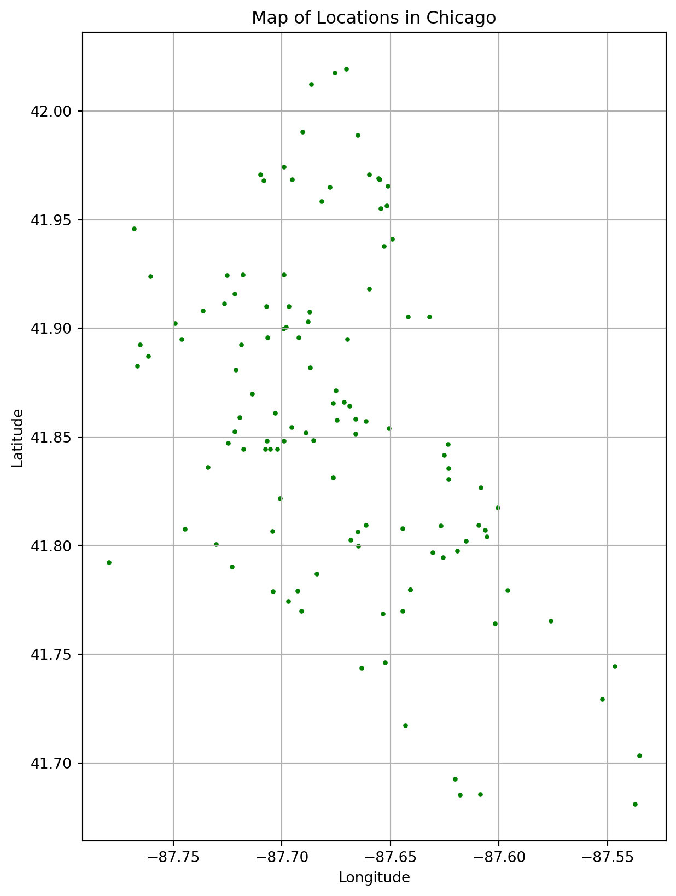
# match the crs code for creating buffer
point = point.set_crs(epsg=4326)
point = point.to_crs(epsg=32616)
chi_shp = chi_shp.to_crs(epsg=32616)Base Map with the points
# create a base map with the shapefile
ax = chi_shp.plot(color='lightgrey', edgecolor='black', figsize=(10, 10), alpha=0.5)
# overlay the points on the map
point.plot(ax=ax, marker='o', color='red', markersize=10)
plt.title("Chicago Map with Points")
plt.xlabel("Longitude")
plt.ylabel("Latitude")
plt.show()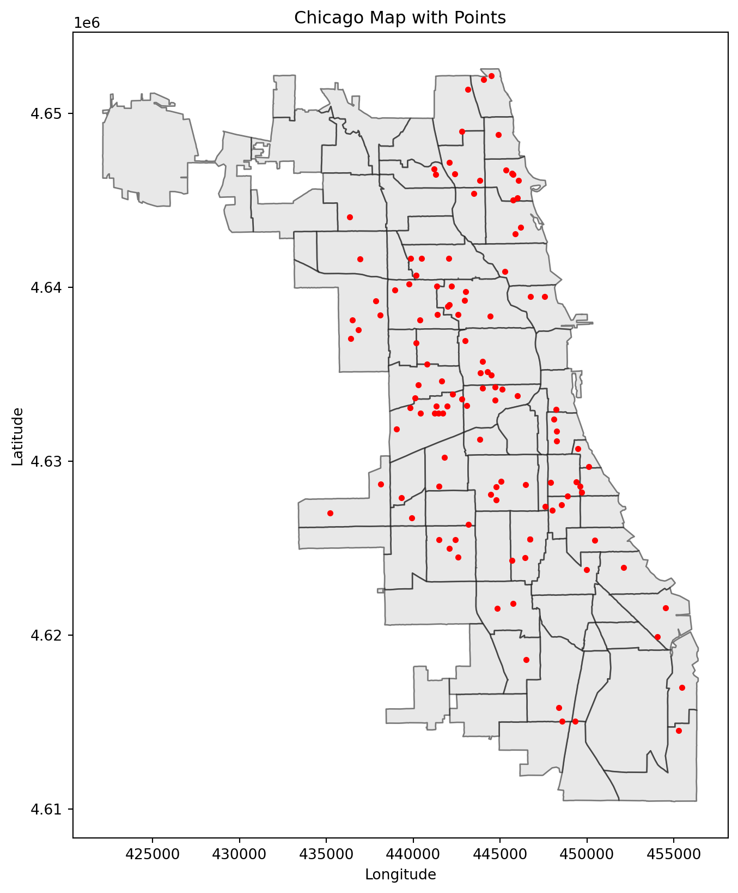
Highlight the area with the health centers
# highlight the area that has Chicago Primary Care Community Health Centers
# spatial join
highlighted_areas = chi_shp.sjoin(point, how='inner', predicate='intersects')
# keep only unique community areas
highlighted_areas = highlighted_areas.drop_duplicates(subset=chi_shp.geometry.name)
# add a highlight flag
chi_shp["has_points"] = chi_shp.geometry.apply(lambda geom: geom in highlighted_areas.geometry.values)
# plot shapefile, highlighting areas with points
custom_cmap = ListedColormap(["yellow", "lightgrey"])
ax = chi_shp.plot(
column="has_points",
cmap=custom_cmap, # Colors: cool areas without points, warm areas with points
edgecolor="grey",
figsize=(12, 12),
legend=True
)
# add the points to the map
point.plot(ax=ax, marker='o', color='red', markersize=5, label="Points")
# add labels and title
plt.title("Highlighted Community Areas with Points")
plt.xlabel("Longitude")
plt.ylabel("Latitude")
plt.legend()
plt.show()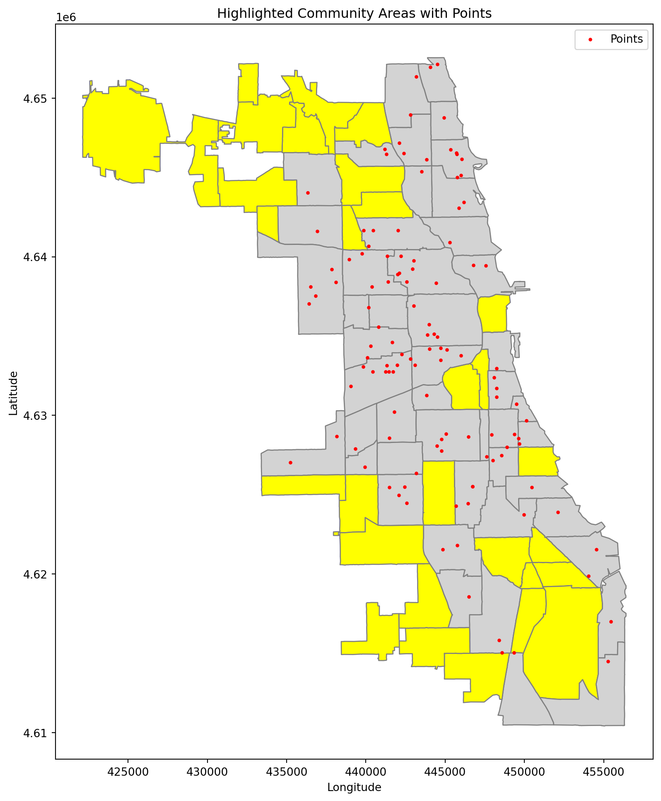
Combined Demographic and Health outcome data
# fix the wrong community name
data["community_area_name"] = data["community_area_name"].replace(
{"Montclaire": "Montclare"})
# Merge shp with the demographic dataset
chi_shp_dem = chi_shp.merge(data, left_on="DISTITLE",right_on = "community_area_name", how="outer")
chi_shp_dem = chi_shp_dem.to_crs(epsg=32616)
# save the shape + demographic dataset for shiny
chi_shp_dem.to_file("chi_shp_dem.geojson", driver="GeoJSON")Look at the 1 mile buffer for the primary care center
# create the 1 mile buffer
point["buffer"] = point.geometry.buffer(1609)
buffers = gpd.GeoDataFrame(point, geometry="buffer", crs=point.crs)Cancer mortality Rate in Community Area
fig, ax = plt.subplots(1, 1, figsize=(5, 5))
chi_shp_dem.plot(ax=ax, column="cancer_all_sites", cmap="Reds", edgecolor="lightgrey",legend=True, label="Cancer Rates")
buffers.plot(ax=ax, color="blue", alpha=0.2, edgecolor="None")
plt.title(" 1 Mile Buffers and Cancer Rates in Community Areas")
plt.legend()
plt.show()/var/folders/xp/13j7_6qs0bjcjm3r53h36v0h0000gn/T/ipykernel_30948/2616533059.py:6: UserWarning: Legend does not support handles for PatchCollection instances.
See: https://matplotlib.org/stable/tutorials/intermediate/legend_guide.html#implementing-a-custom-legend-handler
plt.legend()
/var/folders/xp/13j7_6qs0bjcjm3r53h36v0h0000gn/T/ipykernel_30948/2616533059.py:6: UserWarning: No artists with labels found to put in legend. Note that artists whose label start with an underscore are ignored when legend() is called with no argument.
plt.legend()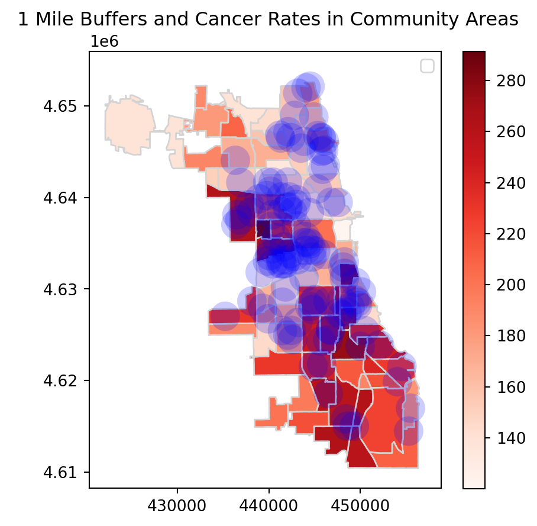
Diabetes rate in Community Area
fig, ax = plt.subplots(1, 1, figsize=(5, 5))
chi_shp_dem.plot(ax=ax, column="diabetes_related", cmap="Blues", edgecolor="lightgrey",legend=True, label="Diabetes Rates")
buffers.plot(ax=ax, color="blue", alpha=0.2, edgecolor="None")
plt.title(" 1 Mile Buffers and Diabetes in Community Areas")
plt.legend()
plt.show()/var/folders/xp/13j7_6qs0bjcjm3r53h36v0h0000gn/T/ipykernel_30948/2127620628.py:6: UserWarning: Legend does not support handles for PatchCollection instances.
See: https://matplotlib.org/stable/tutorials/intermediate/legend_guide.html#implementing-a-custom-legend-handler
plt.legend()
/var/folders/xp/13j7_6qs0bjcjm3r53h36v0h0000gn/T/ipykernel_30948/2127620628.py:6: UserWarning: No artists with labels found to put in legend. Note that artists whose label start with an underscore are ignored when legend() is called with no argument.
plt.legend()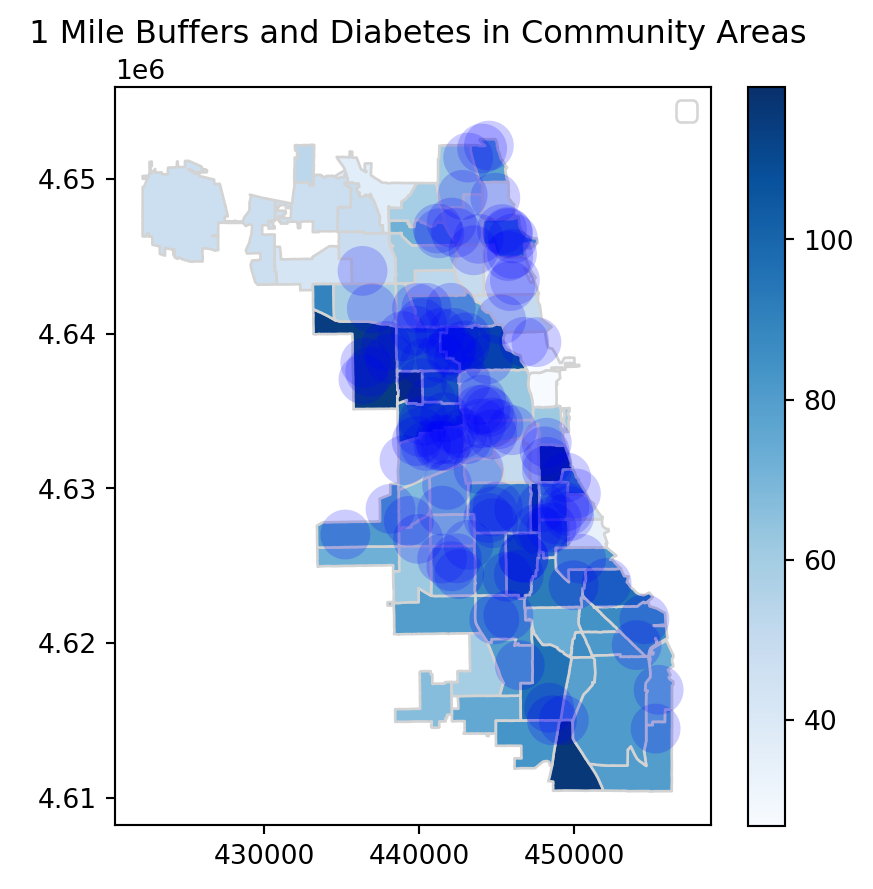
Below Poverty Level in Community Area
fig, ax = plt.subplots(1, 1, figsize=(5, 5))
chi_shp_dem.plot(ax=ax, column="below_poverty_level", cmap="Greens", edgecolor="lightgrey",legend=True, label="Below Poverty Level")
buffers.plot(ax=ax, color="blue", alpha=0.2, edgecolor="None")
plt.title(" 1 Mile Buffers and Below Poverty Levelin Community Areas")
plt.legend()
plt.show()/var/folders/xp/13j7_6qs0bjcjm3r53h36v0h0000gn/T/ipykernel_30948/1705648710.py:6: UserWarning: Legend does not support handles for PatchCollection instances.
See: https://matplotlib.org/stable/tutorials/intermediate/legend_guide.html#implementing-a-custom-legend-handler
plt.legend()
/var/folders/xp/13j7_6qs0bjcjm3r53h36v0h0000gn/T/ipykernel_30948/1705648710.py:6: UserWarning: No artists with labels found to put in legend. Note that artists whose label start with an underscore are ignored when legend() is called with no argument.
plt.legend()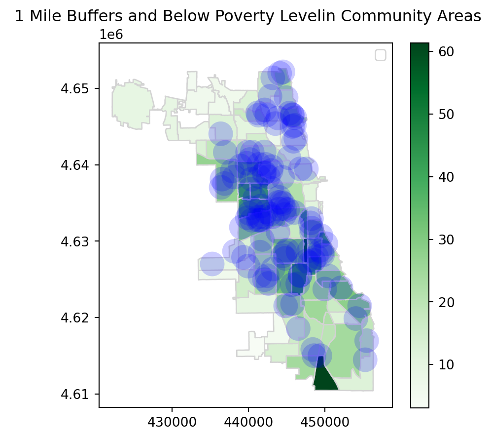